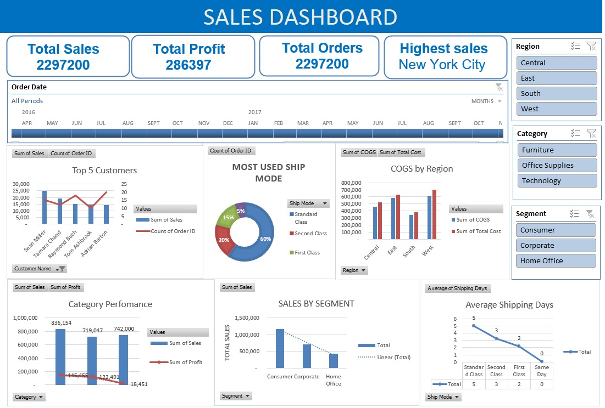
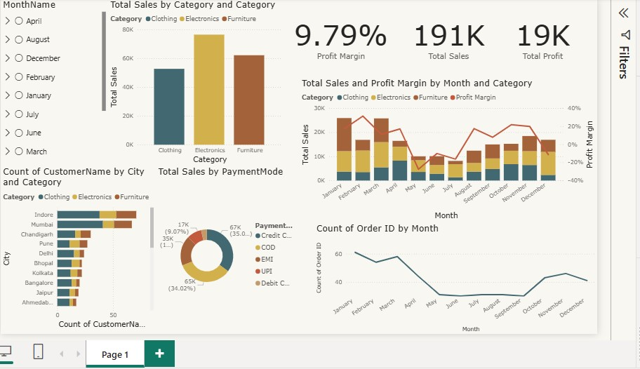
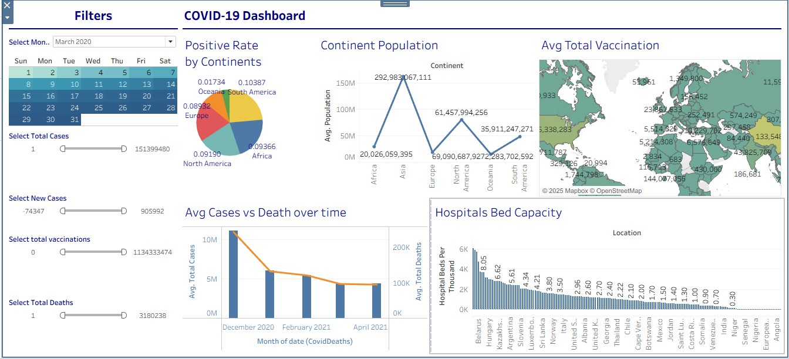

My Projects

Excel Data Analysis & Dashboard
Click to view details

Amazon Product Sales - SQL Data Cleaning
Click to view details
×
Amazon Product Sales - SQL Data Cleaning
- Designed and executed a complete MySQL data-cleaning workflow on 15,000+ Amazon product records using a structured staging-table approach.
- Applied window functions (ROW_NUMBER with PARTITION BY) to detect and eliminate duplicate records with high accuracy.
- Standardized key fields using REGEXP_REPLACE, TRIM, CASE logic, and NULLIF to normalize numeric values, remove noise text, and correct inconsistent formats.
- Enhanced overall dataset integrity by cleaning malformed attributes, validating data types, and establishing a consistent schema ready for analytics and dashboarding.

Online Sales Analysis (Power BI)
Click to view details

Global COVID-19 Analysis (Tableau)
Click to view details